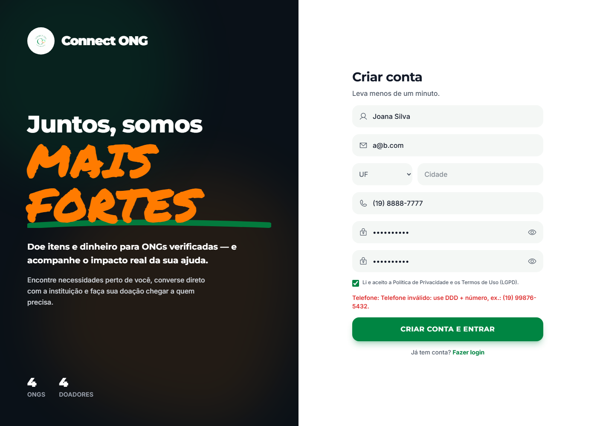
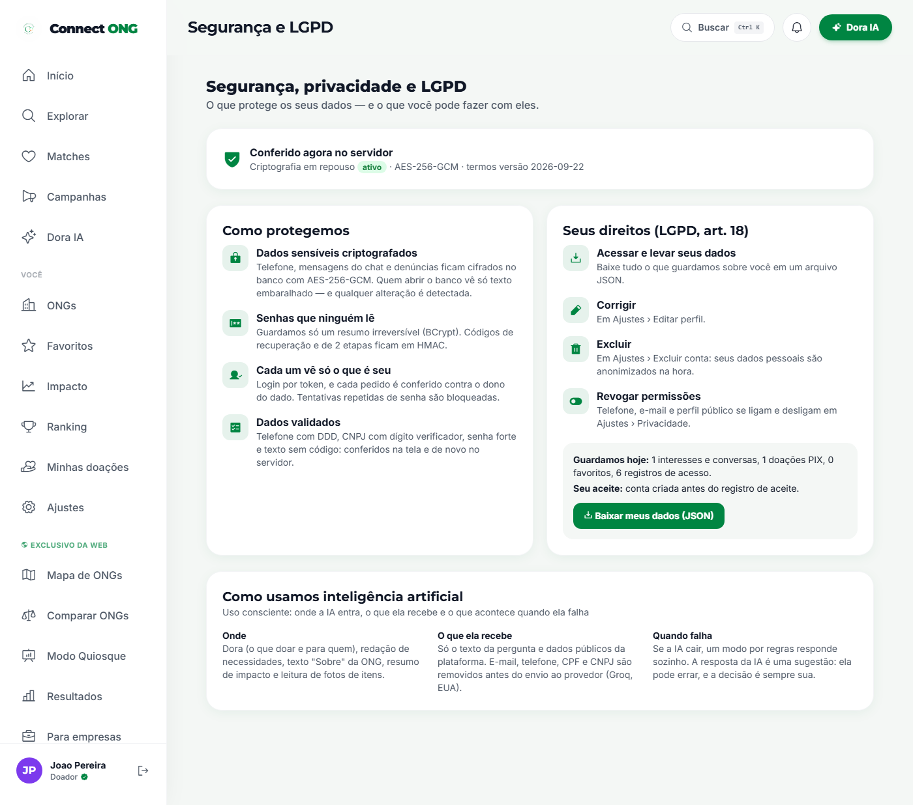
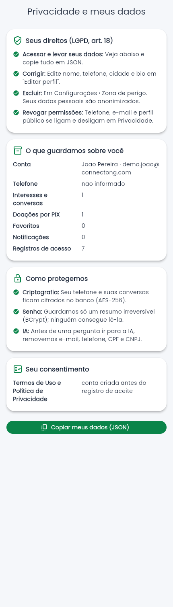
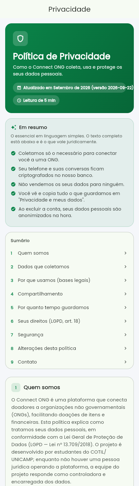
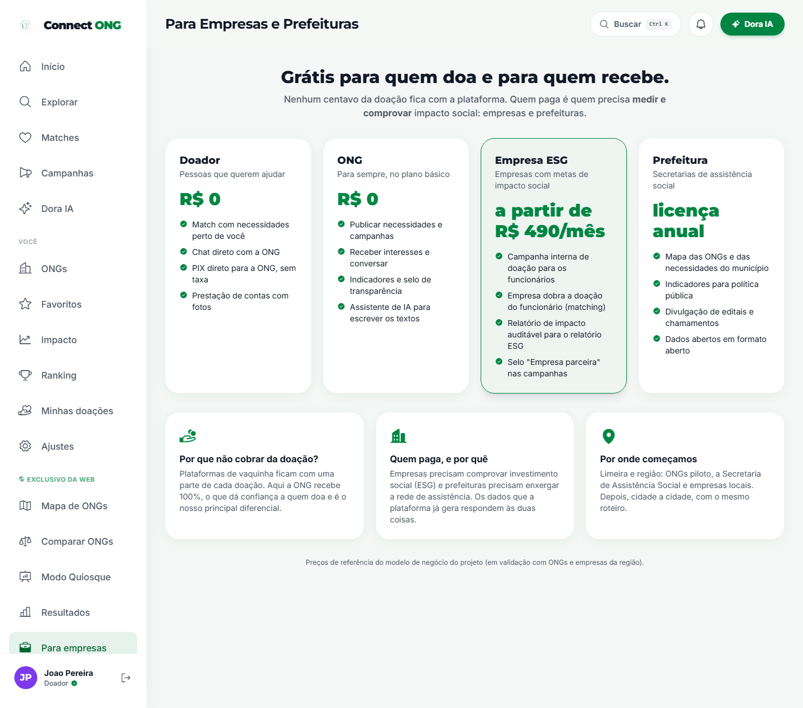
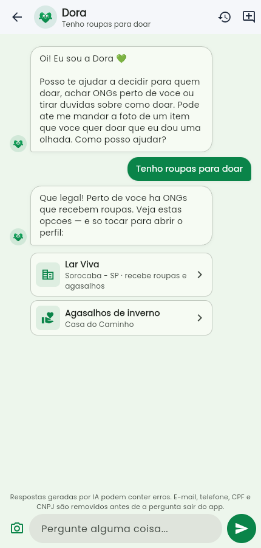
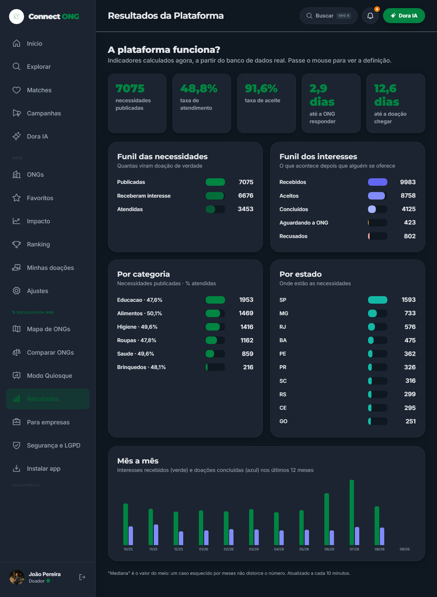
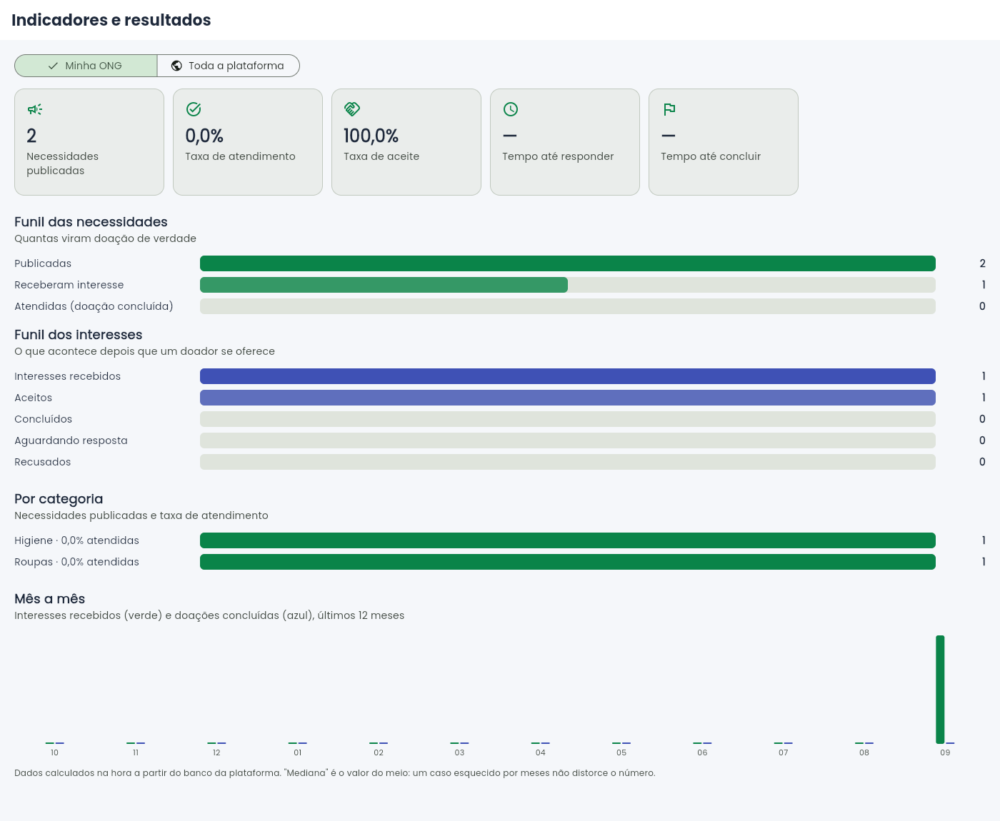

Na FECITEC o projeto recebeu média 6,6. As notas mais altas foram em Interface (9), Arquitetura (9), Impacto e Ética (9) e Inovação (8). As mais baixas foram em Segurança e Privacidade (3), Modelo de Negócios (4) e Análise de Dados (5), e o avaliador 2 resumiu o principal problema técnico: "não tinha validações nos campos, podia colocar o que quisesse em tudo" e "não tem criptografia em dados sensíveis ou LGPD". Este documento mostra o que foi feito para cada ponto, onde conferir e o que ficou para depois (com o motivo).
Os IDs são os do Plano de Ação. Commits em github.com/Gabriel-Chinelatto/<repositório>/commit/<código>. "Print" são as figuras da seção 3. Os testes citados rodam a cada push (GitHub Actions).
| Item | O que foi pedido → o que foi feito | Status | Responsável | Evidência (onde conferir) |
|---|---|---|---|---|
| B-01 | Pouca interação → feed, notificações, sequência e conquistas (já entregues) | Feito | Arthur | Mantidos; suítes do app (124) e do painel (75) verdes. Vídeo: bloco "O que a banca pediu". |
| B-02 | Sem comunicação doador ↔ ONG → chat, agora com mensagens cifradas | Feito | Luan | Teste f03_telefoneEMensagemFicamCifradosNoBanco_eLegiveisNaApi (backend). Commit API 061c300. |
| B-03 | Match com chat automático após o aceite | Feito | Gabriel | Fluxo em produção desde a v1.0; demonstrado no vídeo (doador demonstra interesse → ONG aceita → chat abre). |
| B-04 | Experiência pouco dinâmica → Dora (IA), mapa, ranking, prestação de contas | Feito | Abner | Recursos no ar nos 3 frontends; print 3.7 (Dora com o aviso novo). |
| F-01 | Validação de formato na API | Feito | Luan | Pacote validacao/ (Regras, Telefone, Cnpj, NomeProprio, TextoLegivel, Uf, SenhaForte, PeriodoCampanha). 26 testes em RegrasFormatoTest + 4 em PlanoDeAcaoTest. Commit API 061c300. Seção 3.1. |
| F-02 | As mesmas regras nas telas, com máscara | Feito | Abner | utils/validadores.dart (app e painel, 23 testes cada) e js/validadores.js (site). Commits: app 514f79b, painel 654f7f3, site ca603e0. Print 3.1. |
| F-03 | Criptografia de dados sensíveis | Feito | Gabriel | AES-256-GCM no telefone, no chat e nas denúncias; códigos de verificação em HMAC. 5 testes (cifra, IV aleatório, adulteração detectada, migração do legado, trava de chave). Status ao vivo: /publico/seguranca. Seção 3.2. |
| F-04 | LGPD | Feito | Abner | Consentimento gravado (versão, data, IP); GET /usuarios/{id}/meus-dados; exclusão com anonimização; política reescrita. 3 testes. Prints 3.3, 3.4, 3.5. |
| F-05 | Segurança pouco abordada | Feito | Arthur | Página "Segurança e LGPD" no site (print 3.3) e a seção 5 deste documento. O bloco no vídeo segue o roteiro da seção 7. |
| F-06 | Pouco pensado para o mercado | Feito | Arthur | Modelo de negócios na seção 4: Lean Canvas, segmentos, concorrência, receita, custos, mercado e metas. |
| F-07 | O mercado visível no produto | Feito | Abner | Página "Para empresas" no site (print 3.6). Commit site ca603e0. |
| F-08 | Análise de dados e resultados | Feito | Luan | /publico/indicadores e /ongs/{id}/indicadores; teste f08_indicadoresDaOng_funilTaxasEMedianas confere cada número contra um cenário montado à mão. Prints 3.8 e 3.9. |
| F-09 | Resultados com usuários reais | Não feito | Arthur | Depende da equipe ir às ONGs de Limeira e aplicar o formulário; a ferramenta para medir (F-08) já está pronta. Previsto até a banca final. |
| F-10 | Uso consciente da IA | Feito | Gabriel | RedatorDadosPessoais remove e-mail, telefone, CPF e CNPJ antes do envio à Groq (teste redatorTiraContatosEDocumentos); aviso nas telas de IA (print 3.7); seção "Como usamos IA" no site. |
| F-11 | Integrante ausente / autonomia | Em andamento | Todos | Processo da equipe: cada integrante apresenta a sua frente na banca final. Ver retrospectiva (seção 8). |
| F-12 | Estabilidade: paginar necessidades | Não feito | Luan | Era "Could": o tempo foi para os itens Must. Em compensação, a verificação achou e corrigiu um defeito maior (seção 3.10). |
| F-13 | Elogios (time, inovação, pitch) | Won't | Equipe | Pontos fortes mantidos. |
| F-14 | Cifrar todos os dados | Won't | Equipe | Justificativa na seção 5.3. |
| F-15 | Conformidade LGPD completa (DPO, RIPD) | Won't | Gabriel | Exige pessoa jurídica. O que faltaria está na seção 5.4. |
Antes, a API só limitava o tamanho dos campos. Agora ela confere o formato, e as mesmas regras rodam nas três telas, para o erro aparecer antes de enviar. A API continua sendo a palavra final, porque qualquer um pode chamá-la sem passar pela tela. Os casos de teste são idênticos no Java e no Dart, o que prova que tela e servidor concordam.
| Campo | Antes (aceito) | Agora |
|---|---|---|
| Telefone | "abc", "123" | DDD real (lista da Anatel), fixo começando de 2 a 5 ou celular começando com 9, com máscara (19) 99876-5432 |
| CNPJ | qualquer texto com até 20 caracteres | dígitos verificadores conferidos, inclusive o CNPJ alfanumérico que a Receita adotou em julho de 2026 |
| Nome / cidade | "!!!", "Jo4o" | só letras, espaço, hífen, apóstrofo e ponto |
| Títulos e descrições | "12345", "<script>" | ao menos 2 letras e sem os caracteres < e > |
| Senha nova | 6 caracteres na API; 4 na troca de senha do app, do painel e do site | 8+ caracteres, com letras e números, fora da lista de senhas mais comuns — igual em todas as telas |
| Campanha | término antes do início; meta sem teto | término igual ou depois do início (até 2 anos); meta de até R$ 10 milhões |
| Perfil (PUT) | nenhuma validação | nome, telefone, cidade, UF e bio validados; e-mail da ONG conferido; coordenadas entre −90/90 e −180/180 |

{"campos": {"nome": "Nome inválido: use apenas letras…", "senha": "A senha deve ter ao menos 8 caracteres…", "telefone": "Telefone inválido: use DDD + número…", "aceiteTermos": "É preciso aceitar os Termos…"}}CampoCifradoConverter) cifra ao gravar e decifra ao ler, então o resto do sistema não mudou. Cada valor ganha um IV aleatório: o mesmo telefone gravado duas vezes gera cifras diferentes.APP_CRYPTO_KEY). O banco guarda a "impressão digital" da chave: um ambiente com a chave errada não sobe, em vez de misturar chaves e deixar dados ilegíveis.




Antes, a plataforma só mostrava contagens soltas (quantas ONGs, quantos doadores). Agora ela responde se a plataforma funciona:
Tudo sai em duas consultas ao banco (as agregações num único UNION ALL), por causa da regra de desempenho do projeto (cada ida ao banco custa ~600 ms no servidor gratuito).


Sobre os números: a base da escola contém a massa de demonstração preparada para a feira (2.000 ONGs e 1.200 doadores fictícios, com histórico gerado). Os indicadores provam que o cálculo funciona em volume real; os números de uso real virão das ONGs piloto (F-09). O print 3.9 foi tirado com a base local de testes.
Uncaught SyntaxError: Unexpected identifier 'let'. Uma chave } a mais, entrada na véspera da feira (rolagem infinita da lista de ONGs), impedia o JavaScript inteiro de carregar. O site publicado só exibia o login, que não funcionava. A falha foi confirmada no endereço público, corrigida e verificada de novo. Lição: passar a checar o console do site automaticamente antes de publicar (ver retrospectiva).| Alternativa | O que faz | Onde o Connect ONG é diferente |
|---|---|---|
| Vaquinhas online (ex.: Vakinha) | Arrecadação em dinheiro para causas pessoais e sociais | Aqui o foco é a doação de itens com match e chat; a ONG recebe 100% do PIX, sem taxa da plataforma. |
| Financiamento coletivo (ex.: Benfeitoria) | Campanhas com meta e prazo | Relação contínua entre doador e ONG, não uma campanha isolada; prestação de contas com fotos. |
| Voluntariado (ex.: Atados) | Conecta voluntários a ONGs | Complementar: conectamos doações, com logística (frete) e transparência. |
| Ferramentas de captação para ONGs (ex.: Doare) | Sistema pago usado pela ONG | Grátis para a ONG: quem paga é o patrocinador que quer medir impacto. |
O Brasil tem mais de 800 mil organizações da sociedade civil (IPEA, Mapa das OSCs). A maioria é pequena e sem estrutura de captação: é o público do plano gratuito. A receita não depende de volume de doação, mas de dois clientes com orçamento definido: empresas (investimento social privado e relatórios ESG) e municípios (assistência social).
Fase 1 — Limeira (piloto): 3 ONGs parceiras, Secretaria de Assistência Social e 2 empresas locais. Fase 2 — Região de Campinas: o mesmo roteiro, cidade a cidade. Fase 3: estados, com parcerias com redes de ONGs.
| Indicador | Meta |
|---|---|
| ONGs ativas em Limeira | 30 |
| Doadores cadastrados | 500 |
| Taxa de atendimento das necessidades | 40% |
| Empresas pagantes | 2 (≈ R$ 11,8 mil/ano) |
| Prefeitura com licença | 1 (≈ R$ 12 mil/ano) |
| Receita × custo de operação | ≈ R$ 24 mil × ≈ R$ 3 mil/ano |
Valores de referência para discussão com a banca. A validação com ONGs e empresas reais (F-09) é o próximo passo para confirmá-los.
PIX real por um provedor de pagamento (hoje simulado) · aplicativo nas lojas · integração com editais e chamamentos públicos · dados abertos para as prefeituras · relatório ESG automático para as empresas parceiras.
| Camada | Medida |
|---|---|
| Dados em repouso | AES-256-GCM no telefone, no chat e nas denúncias; senhas em BCrypt; códigos de verificação em HMAC-SHA256; chave fora do repositório, com trava de impressão digital. |
| Dados em trânsito | HTTPS em todos os endereços publicados (Render, Netlify, GitHub Pages). |
| Acesso | Login com token JWT (12 h) e refresh (7 dias); verificação em duas etapas opcional; cada pedido é conferido contra o dono do dado (quem tenta ler dado alheio recebe 403); papel de administrador que não pode ser criado pelo cadastro. |
| Abuso | Limite de tentativas no login, no cadastro, na recuperação de senha, nas doações e na IA (429 depois do limite); mensagens que não revelam se um e-mail existe. |
| Entrada de dados | Validação de formato na API e nas telas (seção 3.1); texto do usuário escapado ao ser exibido no site. |
| Privacidade | Telefone e e-mail só aparecem para quem a pessoa autoriza; bloqueio de doador; minimização de dados enviados à IA. |
| LGPD | Consentimento com prova, exportação dos dados, anonimização na exclusão, política com bases legais e retenção, registro de acessos. |
| Auditoria | Registro das ações sensíveis (login, troca de senha, troca de e-mail), sem nunca gravar senha ou código. |
GET https://connect-ong-api.onrender.com/publico/seguranca mostra, sem nenhum segredo, as proteções ativas no servidor. A mesma informação aparece na página "Segurança e LGPD" do site.
O e-mail é usado no login e precisa ser encontrado por igualdade; cifrado com IV aleatório, isso deixaria de funcionar. Os dados da ONG (nome, endereço, telefone institucional) são públicos por natureza. Esses dados já estão protegidos por HTTPS, controle de acesso por dono e senha com BCrypt.
| Frente | Antes | Agora | O que os testes novos provam |
|---|---|---|---|
| API (Java, JUnit) | 191 | 231 | Cada regra de formato; cadastro que exige aceite e grava o consentimento; exportação só para o dono; anonimização; telefone e mensagem cifrados no banco e legíveis na API; adulteração detectada; migração do legado; ambiente com a chave errada não sobe; indicadores conferidos número a número. |
| App do doador (Dart) | 101 | 124 | As mesmas regras da API, com os mesmos casos, e as máscaras de telefone e CNPJ. |
| Painel da ONG (Dart) | 52 | 75 | Idem. |
| Site (JavaScript) | — | navegador | Teste automatizado no Chrome: três cadastros inválidos barrados com a mensagem certa e um válido que entra na plataforma; console sem erros. |
| Tempo | Bloco | O que aparece na tela | Quem fala |
|---|---|---|---|
| 0:00–0:20 | Abertura | Logo, nome da equipe e do projeto | Gabriel |
| 0:20–0:50 | O que ouvimos | Uma frase: a banca pediu interação; a feira apontou segurança, validação, LGPD, mercado e dados | Gabriel |
| 0:50–1:30 | O que a banca pediu (B-01 a B-04) | Doador demonstra interesse → ONG aceita no painel → o chat abre sozinho | Arthur |
| 1:30–2:40 | Validação (F-01, F-02) | Cadastro no site com nome "Jo4o", senha "123456" e telefone inválido e cadastro de ONG com CNPJ errado (Abner); a mesma recusa vinda da API (Luan) | Abner e Luan |
| 2:40–3:50 | Criptografia (F-03) | Mensagem enviada no chat → a mesma linha no banco aparece como enc:v1:… → no app aparece normal; /publico/seguranca | Gabriel |
| 3:50–4:50 | LGPD (F-04, F-05) | Aceite no cadastro, "Privacidade e meus dados", download do JSON, exclusão de conta de teste mostrando o nome anonimizado | Abner |
| 4:50–6:00 | Resultados (F-08) | Site "Resultados" e painel "Indicadores": funil, taxa de atendimento, tempo de resposta, por estado | Luan |
| 6:00–7:00 | Mercado (F-06, F-07) | Slide do Lean Canvas (Arthur) e página "Para empresas" (Abner) | Arthur e Abner |
| 7:00–7:30 | IA consciente (F-10) | Aviso na Dora e a seção "Como usamos IA" | Gabriel |
| 7:30–8:00 | O que não entrou | F-09 (pesquisa com ONGs reais) e F-12 (paginação), com o motivo | Arthur e Luan |
| 8:00–8:20 | Próximo passo | "Até a banca final: validar com três ONGs de Limeira e fechar a primeira empresa parceira." | Todos |